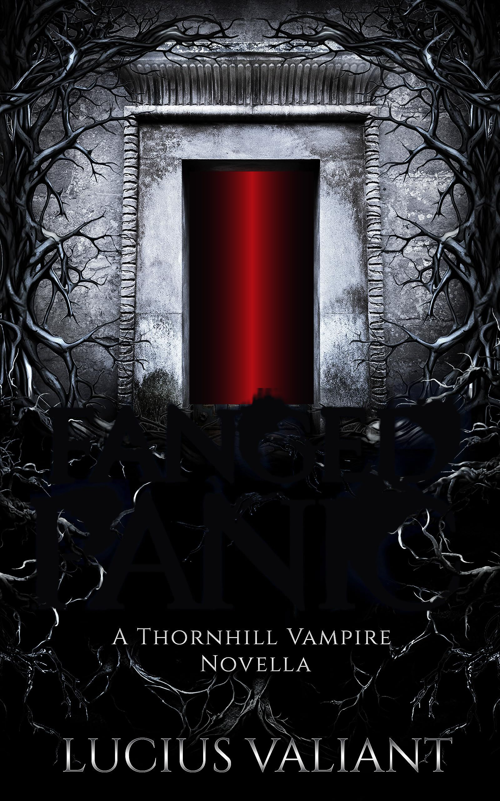
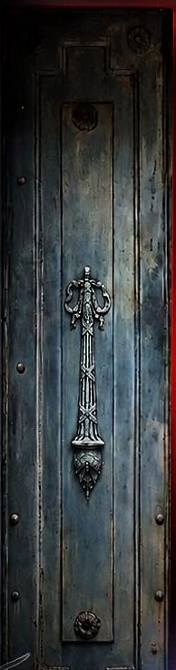
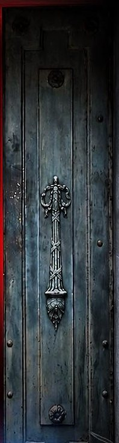
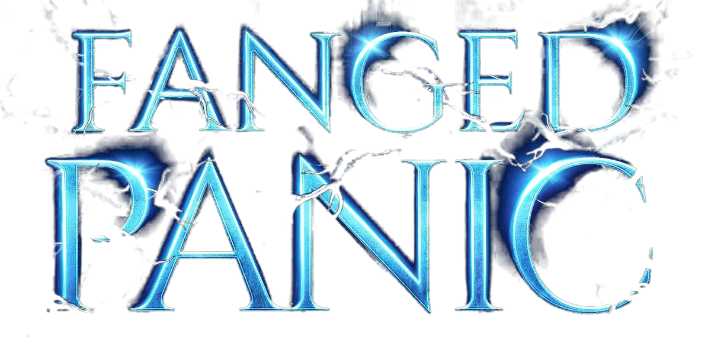
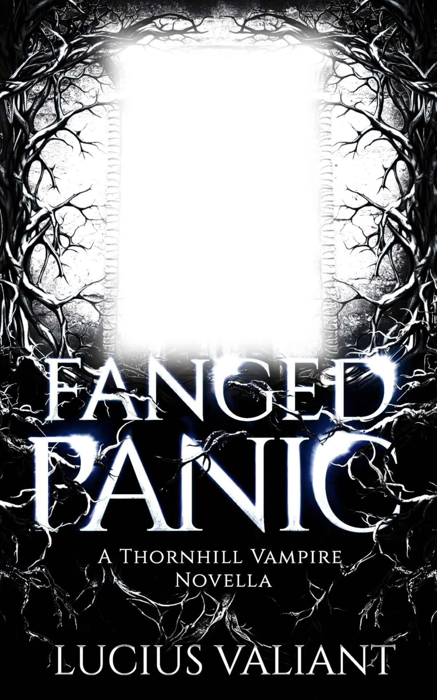
Highgate Cemetery, 1969.
The vampire Lyrica awakens from her slumber in the Thornhill tomb.
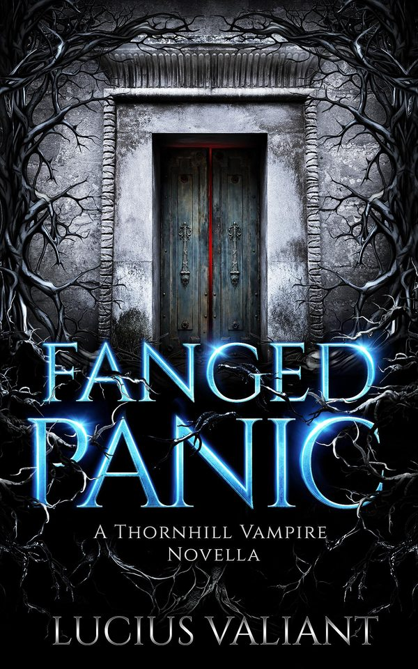
Something is stirring among the graves
Highgate Cemetery, 1969.
The vampire Lyrica awakens from her slumber in the Thornhill tomb and returns to her family’s long-abandoned mansion on top of the hill. But the world she re-enters is soon whispering of a vampire stalking the old Victorian cemetery, drawing journalists, occultists and hunters to its gates.
To divert suspicion from the real vampire hiding in plain sight, Lyrica sets a plan in motion. Summoning the spirit of her murdered uncle, Lord Algernon Thornhill, she orchestrates a haunting convincing enough to satisfy the living.
But neither the living nor the dead are easily controlled.
As the vampire panic grows and a large-scale hunt prepares to descend on Highgate, Lyrica finds herself contending with restless spirits, mysteriously appearing dead foxes, the return of an old family nemesis… and the guilt of leaving her cousin Venedict sealed inside a chain-wrapped casket beneath the mansion.
A Gothic vampire novella set in the world of The Thornhill Vampire Chronicles. 132 pages, out 11 September 2026.
The Thornhill Vampire Chronicles
Eccentric Victorian vampires, deadly rivals, dark family secrets, and love that maims more than it heals. Five books so far, and it all starts at Thornhill Mansion, above Highgate Cemetery West.
- I
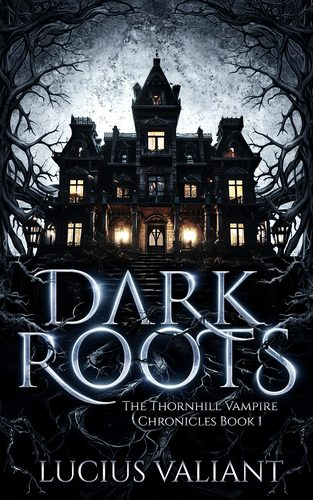
Dark Roots
Vampire hunter Harlan Thorne steps into Thornhill Mansion, and his fate gets hopelessly tangled with the Thornhills’.
2023 - II
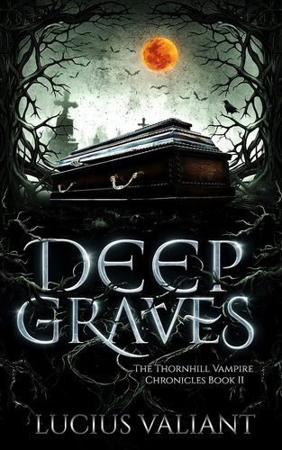
- III
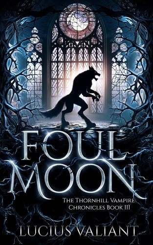
- IV
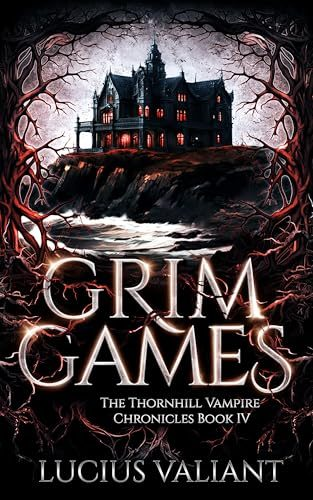
- V
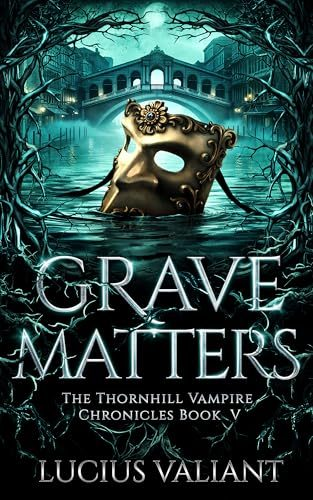
Grave Matters
Venice, as Carnival looms. Old promises, dangerous affections and blood-bound loyalties collide.
2025
Join the Thornhill Dispatch, my letters from the mansion, and book one is yours.
Lucius Valiant
I’m a Danish-British author. The first real book I remember reading is Bram Stoker’s Dracula, and that, as the saying goes, was that.
I love Frankenstein and The Picture of Dorian Gray, Anne Rice, Poppy Z. Brite and Stephen King, and I draw a lot from Britain’s history, folklore and legends.
“Valiant really said ‘let’s make trauma beautiful’ and I ate it up.”
A reader on Goodreads
Find me in Oxford
I’ll be at the Oxford Indie Book Fair. Come and say hello, and pick up a Thornhill book or two.
- Table
- S71
- When
- Sunday 22 November 2026, 11am to 4.30pm
- Where
- Oxford Examination Schools, OX1 4BG
- Entry
- Free